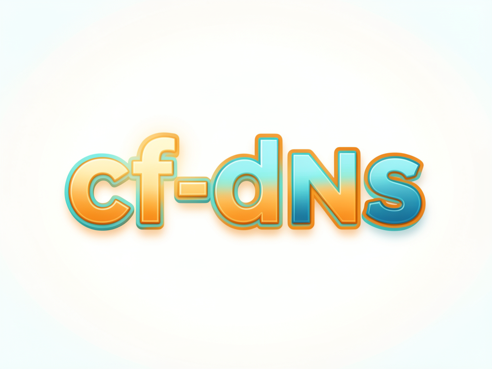

Um script Python de arquivo único que cria, lista e apaga registros no Cloudflare pela API. Inclui o par CNAME + TXT que o Vercel pede para verificar um subdomínio novo.

O painel do Cloudflare é ótimo para olhar e péssimo para repetir. Este script faz a mesma coisa por API, do jeito que dá para versionar, revisar e rodar de novo amanhã.
Nada de pip install. Copie o cf-dns.py para qualquer máquina com Python 3 e ele roda — servidor novo, container, VPS recém-criada.
A credencial vem da variável CLOUDFLARE_API_TOKEN ou de um .env apontado por CF_ENV_FILE. Nenhum segredo mora no repositório.
O subcomando vercel cria o CNAME e o TXT de verificação de uma vez, já com o proxy desligado — que é o detalhe que costuma travar a verificação.
Não há mágica: o script conversa com a API v4 do Cloudflare. O que ele adiciona é a ordem segura — olhar antes de escrever.
GET /zones?name=<dominio> devolve o zone_id. Todo registro pendura nesse id — é sempre o primeiro passo.
GET /zones/<id>/dns_records?name=… mostra o que já está lá. É o que evita descobrir um conflito só depois de quebrar o site.
POST cria e DELETE /dns_records/<record_id> remove. O list imprime o id de cada registro, que é o que o delete consome.
Não há serviço para subir, nem daemon, nem banco. O script é stateless: cada execução é uma conversa curta com a API.
Qualquer versão 3.x que sua distro trouxer. Nenhum pacote externo é importado.
# conferir python3 --version
No painel: My Profile → API Tokens → Create Token, template Edit zone DNS. Permissão Zone → DNS → Edit nas zonas que você vai mexer. O token aparece uma única vez.
# guardar fora do git echo 'CLOUDFLARE_API_TOKEN=SEU_TOKEN' >> ~/.env chmod 600 ~/.env
A zona precisa já estar na conta e o token precisa enxergá-la. Se não enxergar, o script diz isso em vez de falhar em silêncio.
# teste de fumaça ./cf-dns.py list inema.club
Cinco passos. O quarto é o que você vai repetir sempre.
O repositório inteiro é o script mais a documentação. Copie o arquivo para onde seu $PATH alcança.
git clone https://github.com/inematds/cf-dns install -m 755 cf-dns/cf-dns.py ~/bin/cf-dns.py
Duas formas: variável de ambiente, ou um arquivo .env indicado por CF_ENV_FILE. Sem nenhuma das duas, o script recusa e explica o motivo.
# variável de ambiente export CLOUDFLARE_API_TOKEN=seu_token # ou apontando um arquivo export CF_ENV_FILE=~/.env
Sempre. O list mostra tipo, nome, valor, estado do proxy e o id de cada registro — e é assim que você descobre um A ocupando o host que você ia usar.
./cf-dns.py list inema.club # a zona inteira ./cf-dns.py list inema.club dlp2 # só um nome
O nome pode ser o subdomínio puro (rede) ou o domínio completo. O TTL padrão é 60 segundos — bom enquanto algo está sendo verificado.
# A apontando pra um IP ./cf-dns.py add inema.club A rede 192.168.2.99 # CNAME com TTL maior ./cf-dns.py add inema.club CNAME app destino.exemplo.com --ttl=300 # com o proxy laranja ligado (só quando fizer sentido) ./cf-dns.py add inema.club A site 203.0.113.10 --proxied
O delete usa o id que o list imprimiu — não o nome. É proposital: você tem que ver o registro antes de removê-lo.
./cf-dns.py list inema.club dlp2 ./cf-dns.py delete inema.club 76d14e9482f4b03f9d05a3c643f6cca7
Comandos reais, tirados de uso de verdade nos domínios do INEMA.
O Vercel pede duas coisas: um CNAME apontando pro vercel-dns e um TXT em _vercel provando que o domínio é seu. O subcomando vercel faz as duas, já com proxy desligado — com o proxy ligado a verificação não passa.
./cf-dns.py vercel inema.club dlp2 \ 820ed52053a39f8f.vercel-dns-017.com \ vc-domain-verify=dlp2.inema.club,5bc6ac41fe34ada1f4f9
Vários TXT em _vercel convivem sem problema — um por subdomínio. Depois que o Vercel fica verde, o TXT daquele subdomínio pode sair.
Dá para usar DNS público apontando para IP privado — resolve só para quem está na rede (ou na VPN). O proxy tem que ficar desligado: o Cloudflare não proxia endereço privado.
./cf-dns.py add inema.club A rede 192.168.2.99 # -> rede.inema.club responde 192.168.2.99 dentro da LAN
A ferramenta é pequena de propósito: um arquivo que cabe na cabeça e que você lê inteiro antes de confiar nela.
.env. O script não imprime o valor em lugar nenhum, nem em mensagem de erro.list antes de qualquer alteração e anote o valor antigo antes de apagar. Um A e um CNAME não podem coexistir no mesmo host — trocar um pelo outro derruba o que estava lá.--dry-runImprimir a chamada que seria feita sem executá-la, para revisar mudança em lote antes de aplicar.